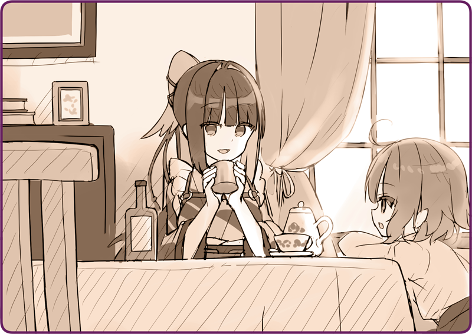

プリマドール・アンコール
06-09 雪華文様(9)
＜＜前のエピソード
目次
次のエピソード＞＞
「……ふぅ」
「……ふぅ」
黄金色の液体がなみなみと入ったカップを傾ける。
ローサ「おいしい？」
「ええ……とっても」
「ええ……とっても」
最初
機械人形
メカニカ
用の燃料をと考えたようだが、あまり品質が良くないということで、代わりに料理用のひまわり油を注いでくれた。椅子で休みながらゆっくり補給すると、やがて背嚢の排気も安定してきた。

「……ごめんなさいね」
「……ごめんなさいね」
ローサ「どうして謝るの？」
「だって……なんだか悪いわ。油だって貴重なものだし……」
「だって……なんだか悪いわ。油だって貴重なものだし……」
ローサ「……わたし、迷惑だなんて思ってない」
「だけど……」
「だけど……」
ローサ「お姉ちゃんとは仲良しだから」
「仲良し……」
「仲良し……」
ローサ「違う？」
「う、ううん、違わないわ……仲良くなったものね」
「う、ううん、違わないわ……仲良くなったものね」
ローサ「だから、困ったことがあればなんでも言って。わたしたちは……友達でしょう？」
「友達……」
「友達……」
その言葉の意味を、鴉羽は知っていた。
それでも、実感として捉えたことはなく、なんとも不思議な気持ちだった。
ローサ「違う……？」
「違わないわ。そうね……友達ね」
「違わないわ。そうね……友達ね」
ローサ「うんっ」
「頼りにしているわ、ローサ」
「頼りにしているわ、ローサ」
ローサ「任せて」
にっこりと笑う。
初めて出会った時とは想像もつかない、柔らかな笑顔だった。
「ローサは、他にも友達がいるの？」
「ローサは、他にも友達がいるの？」
ローサ「この島には、いない」
「そう……なんだ」
「そう……なんだ」
ローサ「ずっとお爺ちゃんと一緒だし。島には同い年の子供もあまりいないし。いても、遊んでくれないから……」
以前、郵便夫から聞いた話を思い出す。ヘレナ島の人は余所者を信用しない……それは鴉羽が人形だからという理由だけではないようだ。
ローサ「だれも、わたしの言うことを信用してくれないし……」
「ローサは正直者よ」
「ローサは正直者よ」
ローサ「でも、誰も信じてくれないの」
「あたしは信じるわよ」
「あたしは信じるわよ」
ローサ「……本当に？」
「ええ、なんでも」
「ええ、なんでも」
ローサ「………」
視線を落として、彼女はすこし黙った。
なにやらじっと考え込んで、やがて意を決したように顔を上げた。
ローサ「……山奥に、皇国の飛行機が不時着したの」
「え……？」
「え……？」
ローサ「そこには、小さな人形が乗ってた」
ローサ「わたしびっくりして、助けてあげたくて……島の子供にも伝えたんだけど……嘘つきって……」
「ちょ、ちょっと待って」
「ちょ、ちょっと待って」
昨日、マスターと奥宮少佐の会話を思い出す。
「そのお話、聞かせてもらえる……ううん」
「そのお話、聞かせてもらえる……ううん」
ごくごくとひまわり油を飲んで、立ち上がっていた。
「あたしをその場所に連れて行ってもらえる……？」
「あたしをその場所に連れて行ってもらえる……？」
＊ ＊ ＊
農耕用機械人形に乗って、注意深く雪道を進んでいく。
「飛行機が不時着したのはいつ？」
「飛行機が不時着したのはいつ？」
ローサ「ちょうど冬になる前。はじめての雪が降った日。お爺ちゃんと一緒だったんだけど、
機械人形
メカニカ
の燃料が無くなっちゃって、夜になっても帰れなくて……だから番屋に一泊したの。飛行機を見たのは深夜のこと。お爺ちゃんにも言ったんだけど、誰にも話すなって……」
その上で揺られながら、鴉羽は地図を開いていた。
ヘレナ諸島の北部は丘陵地帯が続いており、無数の湖沼が顔を見せている。徐々に起伏は激しくなり、やがて高さ５００ｍ程の山に続いていく。ローサの話では、飛行機が不時着したのは山の麓の辺りだという。
ローサ「地元の人は、冬になるとこの近くには寄りつかないの」
「確かに、なにも収穫できなさそうね……」
「確かに、なにも収穫できなさそうね……」
夏の間は青々とした緑が広がっているのだろうが、いまはすべてが雪の下だ。
ローサ「ずっといくと大きな湖に行き当たる。その対岸よ」
「この
機械人形
メカニカ
じゃ、湖は渡れないわ」
「この
機械人形
メカニカ
じゃ、湖は渡れないわ」
ローサ「いまは凍ってるから大丈夫」
「陸路じゃ無理なの？」
「陸路じゃ無理なの？」
ローサ「森が深いから、たぶん無理」
「……氷、割れたりしないかしら」
「……氷、割れたりしないかしら」
逆に言えば、そういう場所だからこそ、人目にさらされずに済んだのだろう。
雪をかき分けていくと、やがて視界が開ける。
氷結湖だ。
「……念のため、湖岸を回っていきましょう」
「……念のため、湖岸を回っていきましょう」
恐る恐る氷の上に乗ってみると、
機械人形
メカニカ
の重さにも耐えられるようだった。とはいえ、氷の厚さにはむらがあるはずだ。万が一を考えて、いつでも逃げられるよう湖岸をぐるりと一周していく。
ローサ「ずいぶん遠回り」
「落ちたらどうするのよ……人形は泳げないの」
「落ちたらどうするのよ……人形は泳げないの」
やがて湖を半周して、目的の場所へやってくる。
まず視界に入ったのは、裂けるように折れた木々だった。重い質量が、この場所に突っ込んだのだ。
ローサ「……こっち」
「ええ……」
「ええ……」
木々を追って進んでいく。
やがてすっぽりと、不自然に雪をかぶった一角に差し掛かった。
「これは……」
「これは……」
機械人形
メカニカ
から降りて、注意深く近づく。そっと雪を落とすと、下から飛行機のキャノピーが現れていた。
「パイロットはどうしたの？」
「パイロットはどうしたの？」
ローサ「わたしが見つけたときは、誰もいなかった」
「ここから逃げ出したというところかしら……」
「ここから逃げ出したというところかしら……」
もしスパイが乗っていたのだとしたら、一刻も早く逃亡しようとするだろう。
「でも……人形っていうのは？」
「でも……人形っていうのは？」
それらしき形跡は見当たらない。そもそもこんな小さな飛行機で人形を運べるのだろうか？
ローサ「この飛行機、操縦席がふたつあるの」
「複座式ってこと？ もしかして……」
「複座式ってこと？ もしかして……」
翼の上に足をかけて乗り上げる。キャノピーの後ろに手を伸ばして、再び雪を払った。
「これは……」
「これは……」
風防ガラス越しに、眠っている表情が目に入る。
それは少女人形だ。なだらかな頬のライン。桜色の髪の毛。白い着物……。
その姿はどこかで見たことがある。大戦果を伝える新聞記事。勇ましげに軍歌を流す皇都ニュース。華やかな軍事パレード。常にその中心にいた人形。皇軍の決戦兵器。輝かしき勝利をもたらす存在……。
ローサ「鴉羽さん」
背後でどこか不安げな声色がして、はっと鴉羽は我に返った。
ローサ「この音、なに……？」
不吉な羽音がする。
鴉羽はその音に聞き覚えがあった。
「………っ」
「………っ」
慌てて空に視線を巡らせる。山の中腹。どこか虚ろな姿がそこに浮かんでいる。
薄い灰色に塗装された、鋼鉄の擬態。背中に二枚羽状の飛行ユニット。顔にはなんの表情もなく、じっとこちらを見つめている。
「ローベリアの偵察用機械人形だわ」
「ローベリアの偵察用機械人形だわ」
ローサ「え……？」
「どうやら、この子を探していたみたいね……」
「どうやら、この子を探していたみたいね……」
＜＜前のエピソード
次のエピソード＞＞
こちらのフォームよりご意見・ご感想をお寄せください
もれなくデジタルコンテンツをプレゼント！
執筆：丘野塔也 挿絵：まろやか ＣＶ：楠木ともり（鴉羽）
目次へ戻る
©VISUAL ARTS / Key
Bản dịch tiếng Việt thực hiện bởi Vietnam Key FanClub